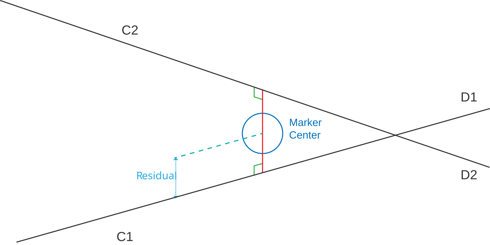
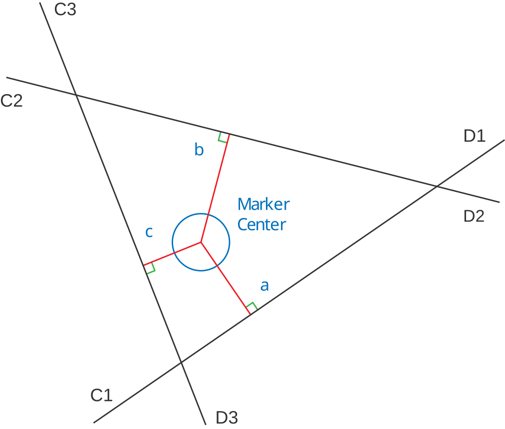

3D Point Residuals
All 3D Points recorded in the C3D file have the capability of recording a residual measurement value. The marker residual is an important number that documents the accuracy of each individual 3D location measurement. Although the concepts behind the calculation of the 3D point residual are based on optical photogrammetry, the principle can be applied to all 3D measurement techniques enabling users to determine the relative accuracy of each measurement recorded in the file.
The illustration below demonstrates the optical situation when two observers see a single point in 3D space. Observer C1 measures the point to be in the direction C1 to D1, and observer C2 determines the point to be in the direction C2 to D2. Thus, we know that the point lies somewhere on the line C1-D1, and that it must also lie on the line C2-D2. This is possible only if the point lies at the virtual intersection of the two rays; thus the 3D reconstruction process calculates the locations of the virtual intersections of rays from each observer to generate a 3D location.

However, due to limits in the measurement precision of all data collection systems, the measured rays from the two observers to any single point will normally pass very close but may not perfectly intersect. This invariably results in the measurement software making a decision about the most probable location for the point under observation when the rays fail to intersect perfectly. For the two rays shown above, with the C2-D2 ray passing slightly above the C1-D1 ray in 3D space, the point location is set at the mid-point of the line forming the shortest distance between them.
The distances from the calculated point location to each ray are related to the uncertainty of the point calculated location, and are termed the residuals for the measurement. Generally, inaccurate measurements or bad calibration will produce large residuals. Although in the case of two-observer measurements, small residuals do not necessarily mean that the measurements were of high accuracy. If the errors happen to be in the plane containing the two rays (containing C1-D1 and C2-D2), then small residuals will result no matter how large the actual errors are. For this reason, three or more observer measurements are usually more reliable. A three-observer measurement involves a third ray (C3-D3) which will normally pass in the vicinity of the intersection of the other two rays and as a result, the problem of determining the point’s most probable position becomes somewhat more complicated.

A least-squares technique should be used to calculate the location of a point in space such that the sum of the squares of the shortest distances from that point to each ray is a minimum. This calculated point then represents the best estimate of the observed 3D location. The individual residual components are the shortest distances (perpendiculars) from the calculated point to each ray.
In a three-observer measurement the probability of obtaining an inaccurate point location with low residuals is quite small. Two of the observers must have errors of exactly the right magnitude in both horizontal and vertical components of their ray directions if a three-ray intersect with very small residuals and a large error is to be produced. Hence, the average residual value is a much better indicator of 3D point location accuracy if more than two observers contribute to the measurement. In general, the residuals obtained for two observer measurements will be smaller than those obtained from measurements made by three or more observers – this does not imply that two observer measurements are more accurate.
Do not assume that low 3D Point residuals indicate accurate measurements since the numbers are generated by software. Different methods of calculating the residuals can generate different values from the same data.
It is recommended that all application software that calculate 3D Point coordinates should also store the average value of the residuals for each 3D point in each frame, because this value is a useful indicator of the reliability of the marker location determination and provides both users and support personnel with vital information about the reliability of the calculated data locations.
In the C3D Standard, the stored 3D point residuals can also act as flags for modified or invalid data points. A residual value of –1.0 is used to indicate that a point is invalid while a residual value of 0.0 indicates that the 3D Point coordinate is the result of modeling calculations, interpolation, or filtering and that its coordinate and residual values are not actual measurements as all indications of the original physical 3D measurement accuracy have been removed.
An IMU (Inertial Measurement Unit) system can measure and reports forces, angular rates, and orientation, using accelerometers, gyroscopes, and magnetometers. When motion data is created by an IMU, or other markerless 3D data collection systems, then the manufacturer’s software calculates virtual 3D locations using methods that mimic the original trigonometric calculations that generated the 3D point locations recorded in C3D files. Accuracy estimations of each virtual 3D location should be recorded as residuals in the C3D file to document the data collection performance.
The recorded 3D Point residual value is data trial specific number, indicating the location measurement accuracy and, while residuals from different trials during a single data collection session may be compared, any change in the calibration, data collection hardware, or software calculating the residuals will affect the recorded values.
Regardless, residuals are essential because they document the accuracy of each 3D data recording session in the 3D data collection environment